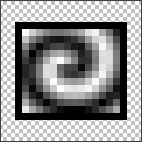

Icons generally have transparent and may have semi-transparent pixels. If you have a graphic with no transparency, and you want to mask out e.g. the white parts, you have to do the following:
Select the Wand (W) tool and set the tolerance to 0% in the Tool Behavior dialog box.
